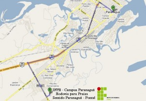

Instituto Federal do Paraná
Campus Paranaguá
Localização
Paranaguá significa “Grande Mar Redondo” (Pernagoa) em tupi guarani, sendo “Paraná” o significado de Grande Rio e “Goá” o significado de Redondo, uma referência à Baía de Paranaguá. É um município brasileiro localizado no litoral do estado do Paraná. É a cidade mais antiga do estado, sendo também chamada de ” berço da civilização paranaense”. A economia da cidade está intimamente ligada ao funcionamento do Porto Dom Pedro II, importante terminal , corredor de exportação do Estado, além do comércio, turismo, agricultura e pesca.
O Campus Paranaguá tem sua proposta sustentada nos arranjos produtivos locais e está localizado no seguinte endereço :
Rua : Antônio Carlos Rodrigues, 453. Bairro : Porto Seguro – Paranaguá – Paraná Cep: 83215-750
O telefone para contato é : (41) 3721-8300

Desenvolvido por: Bill Gates